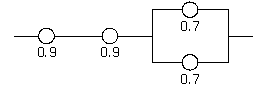
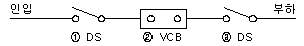
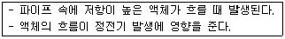
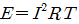
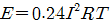
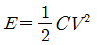
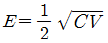

산업안전기사 (2013-03-10 기출문제)
1과목: 안전관리론
1. 매슬로우의 욕구단계이론에서 편견없이 받아들이는 성향, 타인과의 거리를 유지하며 사생활을 즐기거나 창의적 성격으로 봉사, 특별히 좋아하는 사람과 긴밀한 관계를 유지하려는 인간의 욕구에 해당하는 것은?
- 생리적 욕구
- 사회적 욕구
- 자아실현의 욕구
- 안전에 대한 욕구
(정답률: 73%)

2. 다음 중 산업안전보건법상 사업내 안전보건·교육에 있어 관리감독자의 정기 안전보건ㆍ교육내용에 해당하지 않는 것은? (단, 산업안전보건법 및 일반관리에 관한 사항은 제외한다.)
- 정리정돈 및 청소에 관한 사항
- 산업보건 및 직업병 예방에 관한 사항
- 유해ㆍ위험 작업환경 관리에 관한 사항
- 표준안전작업방법 및 지도 요령에 관한 사항
(정답률: 82%)
3. 다음 중 준비, 교시, 연합, 총괄, 응용 시키는 사고과정의 기술교육 진행방법에 해당하는 것은?
- 듀이의 사고과정
- 태도 교육 단계이론
- 하버드학파의 교수법
- MTP(Management Training Program)
(정답률: 65%)
4. 다음 중 관리감독자를 대상으로 교육하는 TWI의 교육내용이 아닌 것은?
- 문제해결훈련
- 작업지도훈련
- 인간관계훈련
- 작업방법훈련
(정답률: 67%)
5. 다음 중 일반적으로 피로의 회복대책에 가장 효과적인 방법은?
- 휴식과 수면을 취한다.
- 충분한 영양(음식)을 섭취한다.
- 땀을 낼 수 있는 근력운동을 한다.
- 모임 참여, 동료와의 대화 등을 통하여 기분을 전환 한다.
(정답률: 90%)
6. 다음 중 버즈(Bird)의 사고 발생 도미노 이론에서 직접원인은 무엇이라고 하는가?
- 통제
- 징후
- 손실
- 위험
(정답률: 60%)
7. 다음 중 하인리히의 재해 손실비용 산정에 있어서 1 : 4 의 비율은 각각 무엇을 의미하는가?
- 치료비의 보상비의 비율
- 급료와 손해보상의 비율
- 직접손실비와 간접손실비의 비율
- 보험지급비와 비보험손실비의 비용
(정답률: 81%)
8. 상시근로자수가 100명인 사업장에서 1일 8시간씩 연간 280일 근무하였을 때, 1명의 사망사고와 4건의 재해로 인하여 180일을 휴업일수가 발생하였다. 이 사업장의 종합재해지수는 약 얼마인가?
- 22.32
- 27.59
- 34.14
- 56.42
(정답률: 54%)
9. 다음 중 학생이 자기 학습속도에 따른 학습이 허용되어 있는 상태에서 학습자가 프로그램 자료를 가지고 단독으로 학습하도록 하는 교육방법은?
- 토의법
- 모의법
- 실연법
- 프로그램 학습법
(정답률: 89%)
10. 다음 중 산업안전보건법령상 안전보건ㆍ표지의 종류에 있어 금지표지에 해당하지 않는 것은?
- 금연
- 사용금지
- 물체이동금지
- 유해물질접촉금지
(정답률: 59%)
11. 다음 중 안전관리조직의 목적과 가장 거리가 먼 것은?
- 조직적인 사고예방활동
- 위험제거기술의 수준 향상
- 재해손실의 산정 및 작업통제
- 조직간 종적ㆍ횡적 신속한 정보처리와 유대강화
(정답률: 53%)
12. 다음 중 안전교육의 원칙과 가장 거리가 먼 것은?
- 피교육자 입장에서 교육한다.
- 동기부여를 위주로 한 교육을 실시한다.
- 오감을 통한 기능적인 이해를 돕도록 한다.
- 어려운 것부터 쉬운 것을 중심으로 실시하여 이해를 돕는다.
(정답률: 90%)
13. 다음 중 인사관리의 목적을 가장 올바르게 나타낸 것은?
- 사람과 일과의 관계
- 사람과 기계와의 관계
- 기계와 적성과의 관계
- 사람과 시간과의 관계
(정답률: 87%)
14. 다음 중 안전점검을 실시할 때 유의 사항으로 옳지 않는 것은?
- 안전점검은 안전수준의 향상을 위한 본래의 취지에 어긋나지 않아야 한다.
- 점검자의 능력을 판단하고 그 능력에 상응하는 내용의 점검을 시키도록 한다.
- 안전점검이 끝나고 강평을 할 때는 결함만을 지적하여 시정 조치토록 한다.
- 과거에 재해가 발생한 곳은 그 요인이 없어졌는가를 확인한다.
(정답률: 87%)
15. 다음 중 무재해운동에 관한 설명으로 틀린 것은?(관련 규정 개정전 문제로 여기서는 기존 정답인 2번을 누르면 정답 처리됩니다. 자세한 내용은 해설을 참고하세요.)
- 제3자의 행위에 의한 업무상 재해는 무재해로 본다.
- “요양”이란 부상 등의 치료를 말하며 입원은 포함되나 재가, 통원은 제외한다.
- “무재해”란 무재해운동 시행사업장에서 근로자가 업무에 기인하여 사망 또는 4일 이상의 요양을 요하는 부상 또는 질병에 이환되지 않는 것을 말한다.
- 업무수행 중의 사고 중 천재지변 또는 돌발적인 사고로 인한 구조행위 또는 긴급피난 중 발생한 사고는 무재해로 본다.
(정답률: 78%)
16. 다음 중 구체적인 동기유발요인에 속하지 않는 것은?
- 기회
- 자세
- 인정
- 참여
(정답률: 63%)
17. 다음 중 보호구에 관한 설명으로 옳은 것은?
- 차광용보안경의 사용구분에 따른 종류에는 자외선용, 적외선용, 복합용, 용접용이 있다.
- 귀마개는 처음에는 저음만을 차단하는 제품부터 사용하며, 일정 기간이 지난 후 고음까지를 모두 차단할 수 있는 제품을 사용한다.
- 유해물질이 발생하는 산소결핍지역에서는 필히 방독 마스크를 착용하여야 한다.
- 선반작업과 같이 손에 재해가 많이 발생하는 작업장에서는 장갑착용을 의무화한다.
(정답률: 76%)
18. 산업재해의 발생 형태 중 사람이 평면상으로 넘어졌을 때의 사고 유형은 무엇이라 하는가?
- 비래
- 전도
- 도괴
- 추락
(정답률: 85%)
19. 다음 중 위험예지훈련을 실시할 때 현상 파악이나 대책수립 단계에서 시행하는 BS(Brainstorming)원칙에 어긋나는 것은?
- 자유롭게 본인의 아이디어를 제시한다.
- 타인의 아이디어에 대하여 평가하지 않는다.
- 사소한 아이디어라도 가능한 한 많이 제시하도록 한다.
- 타인의 아이디어를 활용하여 변형한 의견은 제시하지 않도록 한다.
(정답률: 90%)
20. 다음 중 산업안전보건법령상 안전보건관리책임자 등의 안전보건교육시간 기준으로 틀린 것은?
- 보건관리자의 보수교육 : 24시간이상
- 안전관리자의 신규교육 : 34시간이상
- 안전보건관리책임자의 보수교육 : 6시간이상
- 재해예방전문지도기관 종사자의 신규교육 : 24시간이상
(정답률: 71%)
2과목: 인간공학 및 시스템안전공학
21. 다음 중 흐름공정도(Flow Process Chart)에서 기호와 의미가 잘못 연결된 것은?
- ⃟ : 검사
- ▽ : 저장
- 화살표 : 운반
- ○ : 가공
(정답률: 54%)
22. 다음 중 강한 음영 때문에 근로자의 눈 피로도가 큰 조명방법은?
- 간접조명
- 반간접조명
- 직접조명
- 전반조명
(정답률: 81%)
23. 다음 중 인간의 눈이 일반적으로 완전암조응에 걸리는데 소요되는 시간은?
- 5 ~ 10분
- 10 ~ 20분
- 30 ~ 40분
- 50 ~ 60분
(정답률: 72%)
24. 시스템 안전 프로그램에 있어 시스템의 수명 주기를 일반적으로 5단계로 구분할 수 있는데 다음 중 시스템 수명주기의 단계에 해당하지 않는 것은?
- 구상단계
- 생산단계
- 운전단계
- 분석단계
(정답률: 56%)
25. 다음 중 청각적 표시장치보다 시각적 표시장치를 이용하는 경우가 더 유리한 경우는?(문제 오류로 실제 시험에서는 2, 4번이 정답 처리되었습니다. 여기서는 2번을 누르면 정답 처리 됩니다.)
- 메시지가 간단한 경우
- 메시지가 추후에 재참조되는 경우
- 직무상 수신자가 자주 움직이는 경우
- 메시지가 즉각적인 행동을 요구하지 않는 경우
(정답률: 82%)
26. 다음 중 인체계측자료의 응용원칙에 있어 조절 범위에서 수용하는 통상의 범위는 몇 %tile 정도인가?
- 5 ~ 95%tile
- 20 ~ 80%tile
- 30 ~ 70%tile
- 40 ~ 60%tile
(정답률: 78%)
27. 설비관리 책임자 A는 동종 업종의 TPM 추진사례를 벤치마킹하여 설비관리 효율화를 꾀하고자 한다. 그 중 작업자 본인이 직접 운전하는 설비의 마모율 저하를 위하여 설비의 윤활관리를 일상에서 직접 행하는 활동과 가장 관계가 깊은 TPM 추진단계는?
- 개별개선활동단계
- 자주보전활동단계
- 계획보전활동단계
- 개량보전활동단계
(정답률: 78%)
28. 어떠한 신호가 전달하려는 내용과 연관성이 있어야 하는 것으로 정의되며, 예로써 위험신호는 빨간색, 주의신호는 노란색, 안전신호는 파란색으로 표시하는 것은 다음 중 어떠한 양립성(compatibility)에 해당하는가?
- 공간양립성
- 개념양립성
- 동작양립성
- 형식양립성
(정답률: 79%)
29. 다음 [그림]과 같은 시스템의 신뢰도는 얼마인가? (단, 숫자는 해당 부품의 신뢰도이다.)

- 0.5670
- 0.6422
- 0.7371
- 0.8582
(정답률: 77%)
30. 다음 중 FTA에서 특정 조합의 기본사상들이 동시에 결함을 발생하였을 때 정상사상을 일으키는 기본사상의 집합을 무엇이라 하는가?
- cut set
- error set
- path set
- success set
(정답률: 73%)
31. 다음 중 소음의 1일 노출시간과 소음강도의 기준이 잘못 연결된 것은?
- 8hr - 90dB(A)
- 2hr - 100dB(A)
- 1/2hr - 110dB(A)
- 1/4hr - 120dB(A)
(정답률: 64%)
32. FTA에서 사용하는 수정게이트의 종류에서 3개의 입력현상 중 2개가 발생할 경우 출력이 생기는 것은?
- 우선적 AND 게이트
- 조합 AND 게이트
- 위험지속기호
- 배타적 OR 게이트
(정답률: 76%)
33. 중량물 들기 작업을 수행하는데, 5분간의 산소소비량을 측정한 결과, 90L의 배기량 중에 산소가 16%, 이산화탄소가 4%로 분석되었다. 해당 작업에 대한 분당 산소소비량은 얼마인가? (단, 공기 중 질소는 79vol%, 산소는 21vol%이다.)
- 0.948
- 1.948
- 4.74
- 5.74
(정답률: 32%)
34. 다음 중 근골격계부담작업에 속하지 않는 것은?
- 하루에 10회 이상 25kg 이상의 물체를 드는 작업
- 하루에 총 2시간 이상 목, 어깨, 팔꿈치, 손목 또는 손을 사용하여 같은 동작을 반복하는 작업
- 하루에 총 2시간 이상 쪼그리고 앉거나 무릎을 굽힌 자세에서 이루어지는 작업
- 하루에 총 2시간 이상 시간당 5회 이상 손 또는 무릎을 사용하여 반복적으로 충격을 가하는 작업
(정답률: 61%)
35. 다음 중 항공기나 우주선 비행 등에서 허위감각으로 부터 생긴 방향감각의 혼란과 착각 등의 오판을 해결하는 방법으로 가장 적절하지 않은 것은?
- 주위의 다른 물체에 주의를 한다.
- 정상비행 훈련을 반복하여 오판을 줄인다.
- 여러 가지의 착각의 성질과 발생상황을 이해한다.
- 정확한 방향 감각 암시신호를 의존하는 것을 익힌다.
(정답률: 59%)
36. 다음 중 컷셋과 패스셋에 관한 설명으로 옳은 것은?
- 동일한 시스템에서 패스셋의 개수와 컷셋의 개수는 같다.
- 패스셋은 동시에 발생했을 때 정상사상을 유발하는 사상들의 집합이다.
- 일반적으로 시스템에서 최소 컷셋의 개수가 늘어나면 위험수준이 높아진다.
- 일반적으로 시스템에서 최소 컷셋 내의 사상 개수가 적어지면 위험 수준이 낮아진다.
(정답률: 63%)
37. 다음 중 FMEA(Failure Mode and Effect Analysis)가 가장 유효한 경우는?
- 일정 고장률을 달성하고자 하는 경우
- 고장 발생을 최소로 하고자 하는 경우
- 마멸 고장만 발생하도록 하고 싶은 경우
- 시험 시간을 단축하고자 하는 경우
(정답률: 74%)
38. 다음 중 자동화시스템에서 인간의 기능으로 적절하지 않은 것은?
- 설비 보전
- 작업계획 수립
- 조정 장치로 기계를 통제
- 모니터로 작업 상황 감시
(정답률: 70%)
39. 다음 중 안전성 평가의 기본원칙 6단계에 해당되지 않는 것은?
- 정성적 평가
- 관계 자료의 정비검토
- 안전대책
- 작업 조건의 평가
(정답률: 65%)
40. 다음 중 제조업의 유해ㆍ위험방지계획서 제출 대상 사업장에서 제출하여야 하는 유해ㆍ위험방지계획서의 첨부서류와 가장 거리가 먼 것은?(오류 신고가 접수된 문제입니다. 반드시 정답과 해설을 확인하시기 바랍니다.)
- 공사개요서
- 건축물 각 층의 평면도
- 기계ㆍ설비의 배치도면
- 원재료 및 제품의 취급, 제조 등의 작업방법의 개요
(정답률: 67%)
3과목: 기계위험방지기술
41. 다음 중 세이퍼의 작업시 안전수칙으로 틀린 것은?
- 바이트를 짧게 고정한다.
- 공작물을 견고하게 고정한다.
- 가드, 방책, 칩받이 등을 설치한다.
- 운전자가 바이트의 운동방향에 선다.
(정답률: 81%)
42. 천장크레인에 중량 3kN의 화물을 2줄로 매달았을 때 매달기용 와이어(sling wire)에 걸리는 장력은 얼마인가? (단. 슬링와이어 2줄 사이의 각도는 55° 이다.)
- 1.3kN
- 1.7kN
- 2.0kN
- 2.3kN
(정답률: 63%)
43. 산업안전보건법령에 따라 보일러의 안전한 가동을 위하여 보일러 규격에 맞는 압력방출장치를 압력방출장치가 2개 이상 설치된 경우에는 최고사용압력 이하에서 1개가 작동되고, 다른 압력방출장치는 얼마 이하에서 작동되도록 부착하여야 하는가?
- 최저사용압력 1.03배
- 최저사용압력 1.⑤배
- 최고사용압력 1.03배
- 최고사용압력 1.⑤배
(정답률: 60%)
44. 다음 중 밀링머신 작업의 안전수칙으로 적절하지 않은 것은?
- 강력절삭을 할 때는 일감을 바이스로부터 길게 물린다.
- 일감을 측정할 때에는 반드시 정지시킨 다음에 한다.
- 상하 이송장치의 핸들을 사용 후 반드시 빼 두어야 한다.
- 커터는 될 수 있는 한 컬럼에 가깝게 설치한다.
(정답률: 77%)
45. 다음 중 드릴작업의 안전사항이 아닌 것은?
- 옷소매가 길거나 찢어진 옷은 입지 않는다.
- 회전하는 드릴에 걸레 등을 가까이 하지 않는다.
- 작고, 길이가 긴 물건은 플라이어로 잡고 뚫는다.
- 스핀들에서 드릴을 뽑아낼 때에는 드릴 아래에 손을 내밀지 않는다.
(정답률: 84%)
46. 산업안전보건법령에 따라 산업용 로봇을 운전하는 경우에 근로자가 로봇에 부딪칠 위험이 있을 때에는 안전매트 및 높이 얼마 이상의 방책을 설치하는 등 위험을 방지하기 위하여 필요한 조치를 하여야 하는가?
- 1.0m 이상
- 1.5m 이상
- 1.8m 이상
- 2.5m 이상
(정답률: 82%)
47. 원동기, 풀리, 기어 등 근로자에게 위험을 미칠 우려가 있는 부위에 설치하는 위험방지 장치가 아닌 것은?
- 덮개
- 슬리브
- 건널다리
- 램
(정답률: 65%)
48. 다음 중 선반에서 절삭가공시 발생하는 칩을 짧게 끊어지도록 공구에 설치되어 있는 방호장치의 일종인 칩 제거기구를 무엇이라 하는가?
- 칩 브레이크
- 칩 받침
- 칩 쉴드
- 칩 커터
(정답률: 83%)
49. 다음 중 음향방출시험에 대한 설명으로 틀린 것은?
- 가동 중 검사가 가능하다.
- 온도, 분위기 같은 외적 요인에 영향을 받는다.
- 결함이 어떤 중대한 손상을 초래하기 전에 검출 할 수 있다.
- 재료의 종류나 물성 등의 특성과는 관계없이 검사가 가능하다.
(정답률: 71%)
50. 다음 중 산업안전보건법령상 양중기에 해당하지 않은 것은?
- 곤돌라
- 이동식크레인
- 최대하중 0.2톤의 승강기
- 적재하중 0.5톤의 이삿짐운반용 리프트
(정답률: 62%)
51. 산업안전보건법령에 따라 아세틸렌 용접장치의 아세틸렌 발생기실을 설치하는 경우 준수하여야 하는 사항으로 옳은 것은?
- 벽은 가연성 재료로 하고 철근 콘크리트 또는 그밖에 이와 동등하거나 그 이상의 강도를 가진 구조로 할 것
- 바닥면적의 1/16 이상의 단면적을 가진 배기통을 옥상으로 돌출시키고 그 개구부를 창이나 출입구로부터 1.5m 이상 떨어지도록 할 것
- 출입구의 문은 불연성 재료로 하고 두께 1.0mm 이하의 철판이나 그밖에 그 이상의 강도를 가진 구조로 할 것
- 발생기실을 옥외에 설치한 경우에는 그 개구부를 다른 건축물로부터 1.0m 이내 떨어지도록 하여야 한다.
(정답률: 59%)
52. 다음 중 프레스기에 설치하는 방호장치에 관한 사항으로 틀린 것은?
- 수인식 방호장치의 수인끈 재료는 합성섬유로 직경이 4mm 이상이어야 한다.
- 양수조작식 방호장치는 1행정마다 누름버튼에서 양손을 떼지 않으면 다음 작업의 동작을 할 수 없는 구조 이어야 한다.
- 광전자식 방호장치는 정상동작램프는 적색, 위험 표시 램프는 녹색으로 하며, 쉽게 근로자가 볼 수 있는 곳에 설치해야 한다.
- 손쳐내기식 방호장치는 슬라이드 하행정거리의 3/4 위치에서 손을 완전히 밀어내야 한다.
(정답률: 82%)
53. 강자성체의 결함을 찾을 때 사용하는 비파괴시험으로 표면 또는 표층(표면에서 수 mm 이내)에 결함이 있을 경우 누설자속을 이용하여 육안으로 결함을 검출하는 시험법은?
- 와류탐상시험(ET)
- 자분탐상시험(MT)
- 초음파탐상시험(UT)
- 방사선투과시험(RT)
(정답률: 72%)
54. 다음 중 롤러기의 급정지장치 설치방법으로 틀린 것은?
- 손조작식 급정지장치의 조작부는 밑면에서 1.8m 이내로 설치한다.
- 복부조작식 급정지장치의 조작부는 밑면에서 0.8m 이상, 1.1m 이내로 설치한다.
- 무릎조작식 급정지장치의 조작부는 밑면에서 0.8m 이내에 설치한다.
- 급정지장치의 위치는 급정지장치의 조작부 중심점을 기준으로 한다.
(정답률: 75%)
55. 화물중량이 200kgf, 지게차 중량이 400kgf, 앞바퀴에서 화물의 무게중심까지의 최단거리가 1m이면 지게차가 안정되기 위한 앞바퀴에서 지게차의 무게중심까지의 최단거리는 최소 몇 m 를 초과해야하는가?
- 0.2m
- 0.5m
- 1.0m
- 3.0m
(정답률: 71%)
56. 다음 중 가공기계에 주로 쓰이는 풀 프루프(fool proof)의 형태가 아닌 것은?
- 금형의 가드
- 사출기의 인터로크 장치
- 카메라의 이중촬영방지기구
- 압력용기의 파열판
(정답률: 60%)
57. 다음 중 산업안전보건법령상 프레스 등을 사용하여 작업을 할 때에는 작업시작 전 점검 사항으로 볼 수 없는 것은?
- 압력방출장치의 기능
- 클러치 및 브레이크의 기능
- 프레스의 금형 및 고정볼트 상태
- 1행정 1정지기구ㆍ급정지장치 및 비상정지장치의 기능
(정답률: 79%)
58. 다음 중 기계설비의 수명곡선에서 나타나는 고장형태가 아닌 것은?
- 조립 고장
- 초기 고장
- 우발 고장
- 마모 고장
(정답률: 79%)
59. 단면적이 1800mm2 인 알루미늄 봉의 파괴강도는 70MPa 이다. 안전율을 2.0으로 하였을 때 봉에 가해질 수 있는 최대하중은 얼마인가?
- 6.3kN
- 126kN
- 63kN
- 12.6kN
(정답률: 54%)
60. 다음 중 금형의 설치 및 조정시 안전수칙으로 가장 적절하지 않은 것은?
- 금형을 부착하기 전에 상사점을 확인하고 설치한다.
- 금형의 체결시에는 적합한 공구를 사용한다.
- 금형의 체결시에는 안전블럭을 설치하고 실시한다.
- 금형의 설치 및 조정은 전원을 끄고 실시한다.
(정답률: 71%)
4과목: 전기위험방지기술
61. 3상 3선식 전선로의 보수를 위하여 정전 작업을 할 때 취하여야 할 기본적인 조치는?
- 1선을 접지한다.
- 2선을 단락 접지한다.
- 3선을 단락 접지한다.
- 접지를 하지 않는다.
(정답률: 78%)
62. 개폐조작의 순서에 있어서 그림의 기구 번호의 경우 차단순서와 투입순서가 안전수칙에 적합한 것은?

- 차단 ①→②→③, 투입 ①→②→③
- 차단 ②→③→①, 투입 ②→①→③
- 차단 ③→②→①, 투입 ③→②→①
- 차단 ②→③→①, 투입 ③→①→②
(정답률: 78%)
63. 누전차단기의 설치 장소로 적합하지 않은 것은?
- 주위 온도는 -10~40(℃)범위 내에서 설치할 것
- 먼지가 많고 표고가 높은 장소에 설치할 것
- 상대습도가 45~80(%)사이의 장소에 설치할 것
- 전원전압이 정격전압의 85~110(%)사이에서 사용할 것
(정답률: 66%)
64. 다음 분진의 종류 중 폭연성 분진에 해당하는 것은?
- 소맥분
- 철
- 코크스
- 알루미늄
(정답률: 63%)
65. 고압선로의 활선근접작업시 작업자가 전선로로부터 어느 정도의 거리를 유지하였을 경우 안전하다고 보고 별도의 방호조치나 보호조치를 생략할 수 있는가?
- 머리위 거리가 30cm 이상
- 발아래 거리가 40cm 이상
- 몸옆 수평거리가 50cm 이상
- 심장으로부터 거리가 50cm 이상
(정답률: 63%)
66. 다음 설명과 가장 관계가 깊은 것은?

- 충돌대전
- 박리대전
- 유동대전
- 분출대전
(정답률: 84%)
67. 220[V] 전압에 접촉된 사람의 인체저항이 약 1000[Ω]일 때 인체 전류와 그 결과치의 위험성 여부로 알맞은 것은?
- 10[mA], 안전
- 45[mA], 위험
- 50[mA], 안전
- 220[mA], 위험
(정답률: 70%)
68. 계통접지의 목적으로 옳은 것은?
- 누전되고 있는 기기에 접촉되었을 때의 감전 방지
- 고압전로와 저압전로가 혼촉 되었을 때의 감전이나 화재를 방지
- 누전차단기의 동작을 확실하게 하며 고주파에 의한 계통의 잡음 및 오동작 방지
- 낙뢰로부터 전기기기의 손상을 방지
(정답률: 70%)
69. 내압방폭구조의 기본적 성능에 관한 사항으로 옳지 않은 것은?
- 내부에서 폭발할 경우 그 압력에 견딜 것
- 폭발화염이 외부로 유출되지 않을 것
- 습기침투에 대한 보호가 될 것
- 외함 표면온도가 주위의 가연성 가스에 점화하지 않을 것
(정답률: 75%)
70. 지락(누전) 차단기를 설치하지 않아도 되는 기준으로 틀린 것은?
- 기계기구를 발전소, 변전소에 준하는 곳에 시설하는 경우로서 취급자 이외의 자가 임의로 출입할 수 없는 경우
- 대지 전압 150[V]이하의 기계기구를 물기가 없는 장소에 시설하는 경우
- 기계기구를 건조한 장소에 시설하고 습한 장소에서 조작하는 경우로 제어용 전압이 교류 60[V], 직류 75[V] 이하인 경우
- 기계기구가 유도전동기의 2차측 전로에 접속된 저항기일 경우
(정답률: 50%)
71. 감전되어 사망하는 주된 메커니즘과 거리가 먼 것은?
- 심장부에 전류가 흘러 심실세동이 발생하여 혈액순환 기능이 상실되어 일어난 것
- 흉골에 전류가 흘러 혈압이 약해져 뇌에 산소공급기능이 정지되어 일어난 것
- 뇌의 호흡중추 신경에 전류가 흘러 호흡기능이 정지되어 일어난 것
- 흉부에 전류가 흘러 흉부수축에 의한 질식으로 일어난 것
(정답률: 67%)
72. 정전작업시 작업 중의 조치사항으로 옳지 않은 것은?
- 작업지휘자에 의한 지휘
- 개폐기 투입
- 단락접지 수시확인
- 근접활선에 대한 방호상태 관리
(정답률: 60%)
73. Q=2×10-7[C]으로 대전하고 있는 반경 25[cm]의 도체구의 전위는?
- 7.2[kV]
- 8.6[kV]
- 10.5[kV]
- 12.5[kV]
(정답률: 44%)
74. 전기화재의 경로별 원인으로 거리가 먼 것은?
- 단락
- 누전
- 저전압
- 접촉부의 과열
(정답률: 82%)
75. 정전기 제거만을 목적으로 하는 접지에 있어서의 적당한 접지저항 값은 [Ω]이하로 하면 좋은가?
- 106[Ω]이하
- 1012[Ω]이하
- 1015[Ω]이하
- 1018[Ω]이하
(정답률: 60%)
76. 아세톤을 취급하는 작업장에서 작업자의 정전기 방전으로 인한 화재폭발 재해를 방지하기 위해서는 인체대전전위는 얼마이하로 유지해야 하는가? (단, 인체의 정전용량 100[pF]이고, 아세톤의 최소 착화에너지는 1.15[mJ]로 하며 기타의 조건은 무시한다.)
- 1.5×103[V]
- 2.6×103[V]
- 3.7×103[V]
- 4.8×103[V]
(정답률: 40%)
77. 일반적으로 고압 또는 특고압용 개폐기ㆍ차단기ㆍ피뢰기 기타 이와 유사한 기구로서 동작시에 아크가 생기는 것은 목재의 벽 또는 천장 기타의 가연성 물체로부터 각각 몇 [m]이상 떼어 놓아야 하는가?
- 고압용 1.0[m]이상, 특고압용 2.0[m]이상
- 고압용 1.5[m]이상, 특고압용 2.0[m]이상
- 고압용 1.5[m]이상, 특고압용 2.5[m]이상
- 고압용 2.0[m]이상, 특고압용 2.5[m]이상
(정답률: 59%)
78. 300[A]의 전류가 흐르는 저압 가공전선로의 한 선에서 허용 가능한 누설전류는 몇 [mA]를 넘지 않아야 하는가?
- 100[mA]
- 150[mA]
- 1000[mA]
- 1500[mA]
(정답률: 73%)
79. 인체 피부의 전기저항에 영향을 주는 주요 인자와 거리가 먼 것은 ?
- 접지경로
- 접촉면적
- 접촉부위
- 인가전압
(정답률: 43%)
80. 아크용접 작업시의 감전사고 방지대책으로 옳지 않은 것은?
- 절연 장갑의 사용
- 절연 용접봉 홀더의 사용
- 적정한 케이블의 사용
- 절연 용접봉의 사용
(정답률: 68%)
5과목: 화학설비위험방지기술
81. 다음 중 물 소화약제의 단점을 보완하기 위하여 물에 탄산칼륨(K2CO3)등을 녹인 수용액으로 부동성이 높은 알칼리성 소화약제는?
- 포 소화약제
- 분말 소화약제
- 강화액 소화약제
- 산알칼리 소화약제
(정답률: 63%)
82. 다음 중 폭발하한계(Vol%)값의 크기가 작은 것부터 큰 순서대로 올바르게 나열한 것은
- H2 < CS2 < C2H2 < CH4
- CH4 < H2 < C2H2 < CS2
- H2 < CS2 < CH4 < C2H2
- CS2 < C2H2 < H2 < CH4
(정답률: 38%)
83. 다음 중 인화 및 인화점에 관한 설명으로 가장 적절하지 않은 것은?
- 가연성 액체의 액면 가까이에서 인화하는데 충분한 농도의 증기를 발산하는 최저온도이다.
- 액체를 가열할 때 액면 부근의 증기 농도가 폭발하한에 도달하였을 때의 온도이다.
- 밀폐용기에 인화성 액체가 저장되어 있는 경우에 용기의 온도가 낮아 액체의 인화점 이하가 되어도 용기 내부의 혼합가스는 인화의 위험이 있다.
- 용기 온도가 상승하여 내부의 혼합가스가 폭발상한계를 초과한 경우에는 누설되는 혼합가스는 인화되어 연소하나 연소파가 용기 내로 들어가 가스폭발을 일으키지 않는다.
(정답률: 44%)
84. 다음 중 C급 화재에 가장 효과적인 것은?
- 건조사
- 이산화탄소소화기
- 포소화기
- 봉상수소화기
(정답률: 65%)
85. 산업안전보건법령상에 따라 대상 설비에 설치된 안전밸브 또는 파열판에 대해서는 일정 검사주기마다 적정하게 작동하는 지를 검사하여야 하는데 다음 중 설치구분에 따른 검사주기가 올바르게 연결된 것은?
- 화학공정 유체와 안전밸브의 디스크 또는 시트가 직접접촉될 수 있도록 설치된 경우 : 매년 1회 이상
- 화학공정 유체와 안전밸브의 디스크 또는 시트가 직접접촉될 수 있도록 설치된 경우 : 2년마다 1회 이상
- 안전밸브 전단에 파열판이 설치된 경우 : 3년마다 1회 이상
- 안전밸브 전단에 파열판이 설치된 경우 : 5년마다 1회 이상
(정답률: 58%)
86. 다음 중 산업안전보건법령상 위험물질의 종류에 있어 인화성 가스에 해당하지 않는 것은?
- 수소
- 부탄
- 에틸렌
- 암모니아
(정답률: 59%)
87. 다음 중 반응 또는 조작과정에서 발열을 동반하지 않는 것은?
- 질소와 산소의 반응
- 탄화칼슘과 물과의 반응
- 물에 의한 진한 황산의 희석
- 생석회와 물과의 반응
(정답률: 62%)
88. 다음 중 건조설비의 가열방법으로 방사전열, 대전전열 방식 등이 있고, 병류형, 직교류형 등의 강제대류방식을 사용하는 것이 많으며 직물, 종이 등의 건조물 건조에 주로 사용하는 건조기는?
- 턴넬형 건조기
- 회전 건조기
- Sheet 건조기
- 분무 건조기
(정답률: 63%)
89. 다음 중 화재감지기에 있어 열감지 방식이 아닌 것은?
- 정온식
- 차동식
- 보상식
- 광전식
(정답률: 78%)
90. 다음 중 관로의 방향을 변경하는데 가장 적합한 것은?
- 소켓
- 엘보우
- 유니온
- 플러그
(정답률: 81%)
91. 다음 중 화염방지기의 구조 및 설치 방법이 틀린 것은?
- 본체는 금속제로서 내식성이 있어야 하며, 폭발 및 화재로 인한 압력과 온도에 견딜 수 있어야 한다.
- 소염소자는 내식, 내열성이 있는 재질이어야 하고, 이물질 등의 제거를 위한 정비작업이 용이하여야 한다.
- 화염방지성능이 있는 통기밸브인 경우를 제외하고 화염방지기를 설치하여야 한다.
- 화염방지기는 보호대상 화학설비와 연결된 통기관의 중앙에 설치하여야 한다.
(정답률: 75%)
92. 다음 중 작업자가 밀폐 공간에 들어가기 전 조치해야 할 사항과 가장 거리가 먼 것은?
- 해당 작업장의 내부가 어두운 경우 비방폭용 전등을 이용한다.
- 해당 작업장을 적정한 공기상태로 유지되도록 환기 하여야 한다.
- 해당 장소에 근로자를 입장시킬 때와 퇴장시킬 때에 각각 인원을 점검하여야 한다.
- 해당 작업장과 외부의 감시인 사이에 상시 연락을 취할 수 있는 설비를 설치하여야 한다.
(정답률: 75%)
93. 다음 중 최소발화에너지(E[J])를 구하는 식으로 옳은 것은? (단, I는 전류[A]. R은 저항[Ω], V는 전압[V], C는 콘덴서용량[F], T는 시간[초]이라 한다.)




(정답률: 79%)
94. 질화면(Nitrocellulose)은 저장ㆍ취급 중에는 에틸 알콜 또는 이소프로필 알콜로 습면의 상태로 되어있다. 그 이유를 바르게 설명한 것은?
- 질화면은 건조 상태에서는 자연발열을 일으켜 분해 폭발의 위험이 존재하기 때문이다.
- 질화면은 알콜과 반응하여 안정한 물질을 만들기 때문이다.
- 질화면은 건조 상태에서 공기 중의 산소와 환원반응을 하기 때문이다.
- 질화면은 건조상태에서 용이하게 중합물을 형성하기 때문이다.
(정답률: 62%)
95. 다음 중 물과 반응하여 수소가스를 발생시키지 않는 물질은?
- Mg
- Zn
- Cu
- Li
(정답률: 69%)
96. 다음 중 설비의 주요 구조부분을 변경함으로 공정안전 보고서를 제출하여야 하는 경우가 아닌 것은?
- 플레어스택을 설치 또는 변경하는 경우
- 변경된 생산설비 및 부대설비의 해당 전기정격용량이300kW 이상 증가한 경우
- 생산량의 증가, 원료 또는 제품의 변경을 위하여 반응기(관련설비 포함)를 교체 또는 추가로 설치하는 경우
- 가스누출감지경보기를 교체 또는 추가로 설치하는 경우
(정답률: 69%)
97. 다음 중 유해물 취급상의 안전을 위한 조치사항으로 가장 적절하지 않은 것은?
- 작업적응자의 배치
- 유해물 발생원의 봉쇄
- 유해물의 위치, 작업공정의 변경
- 작업공정의 밀폐와 작업장의 격리
(정답률: 64%)
98. 프로판(C3H8)의 연소에 필요한 최소 산소농도의 값은? (단, 프로판의 폭발하한은 Jone식에 의해 추산한다.)
- 8.1%v/v
- 11.1%v/v
- 15.1%v/v
- 20.1%v/v
(정답률: 61%)
99. 포화탄화수소계의 가스에서는 폭발하한계의 농도 X(vol%)와 그의 연소열(kcal/mol)Q의 곱은 일정하게 된다는 Burgess-Wheeler의 법칙이 있다. 연소열이 635.4kcal/mol인 포화탄화수소 가스의 하한계는 약 얼마인가?
- 1.73%
- 1.95%
- 2.68%
- 3.20%
(정답률: 39%)
100. 다음 중 분진폭발이 발생하기 쉬운 조건으로 적절하지 않은 것은?
- 발열량이 클 것
- 입자의 표면적이 작을 것
- 입자의 형상이 복잡할 것
- 분진의 초기 온도가 높을 것
(정답률: 73%)
6과목: 건설안전기술
101. 안전방망 설치 시 작업면으로부터 망의 설치지점까지의 수직거리 기준은?
- 5m를 초과하지 아니할 것
- 10m를 초과하지 아니할 것
- 15m를 초과하지 아니할 것
- 17m를 초과하지 아니할 것
(정답률: 65%)
102. 시스템 동바리를 조립하는 경우 수직재와 받침철물 연결부의 겹침길이 기준으로 옳은 것은?
- 받침철물 전체길이 1/2 이상
- 받침철물 전체길이 1/3 이상
- 받침철물 전체길이 1/4 이상
- 받침철물 전체길이 1/5 이상
(정답률: 73%)
103. 굴착, 싣기, 운반, 흙깔기 등의 작업을 하나의 기계로서 연속적으로 행할 수 있으며 비행장과 같이 대규모 정지작업에 적합하고 피견인식 자주식으로 구분할 수 있는 차량계 건설 기계는?
- 크램쉘(clamshell)
- 로우더(loader)
- 불도저(bulldozer)
- 스크레이퍼(scraper)
(정답률: 52%)
104. 부두 등의 하역작업장에서 부두 또는 안벽의 선에 따라 통로를 설치할 때의 최소 폭 기준은?
- 90cm 이상
- 75cm 이상
- 60cm 이상
- 45cm 이상
(정답률: 72%)
1⑤. 안전의 정도를 표시하는 것으로서 재료의 파괴응력도와 허용응력도의 비율을 의미하는 것은?
- 설계하중
- 안전율
- 인장강도
- 세장비
(정답률: 74%)
106. 비계의 높이가 2m 이상인 작업장소에는 작업발판을 설치해야 하는데 이 작업발판의 설치기준으로 옳지 않은 것은? (단, 달비계ㆍ달대비계 및 말비계를 제외한다.)
- 작업발판의 폭은 40cm 이상으로 설치한다.
- 작업발판재료는 뒤집히거나 떨어지지 않도록 둘 이상의 지지물에 연결하거나 고정한다.
- 추락의 위험성이 있는 장소에는 안전난간을 설치한다.
- 발판재료 간의 틈은 5센티미터 이하로 한다.
(정답률: 75%)
107. 가설통로의 설치 기준으로 옳지 않은 것은?
- 추락할 위험이 있는 장소에는 안전난간을 설치할 것
- 경사가 10° 를 초과하는 경우에는 미끄러지지 않는 구조로 할 것
- 경사는 30° 이하로 할 것
- 건설공사에 사용하는 높이 8m 이상인 비계다리에는 7m 이내마다 계단참을 설치할 것
(정답률: 75%)
108. 다음 중 토석붕괴의 원인이 아닌 것은?
- 절토 및 성토의 높이 증가
- 사면 법면의 경사 및 기울기의 증가
- 토석의 강도 상승
- 지표수ㆍ지하수의 침투에 의한 토사중량의 증가
(정답률: 78%)
109. 점토지반의 토공사에서 흙막이 밖에 있는 흙이 안으로 밀려 들어와 내측흙이 부풀어 오르는 현상은?
- 보일링(boiling)
- 히빙(heaving)
- 파이핑(piping)
- 액상화
(정답률: 66%)
110. 공사진척에 따른 안전관리비 사용기준은 얼마 이상인가? (단, 공정율이 70% 이상 ~ 90% 미만일 경우)
- 50%
- 60%
- 70%
- 90%
(정답률: 74%)
111. 차량계 하역운반기계에 화물을 적재하는 때의 준수사항으로 옳지 않은 것은?
- 하중이 한쪽으로 치우치지 않도록 적재할 것
- 구내운반차 또는 화물자동차의 경우 화물의 붕괴 또는 낙하에 의한 위험을 방지하기 위하여 화물에 로프를 거는 등 필요한 조치를 할 것
- 운전자의 시야를 가리지 않도록 화물을 적재할 것
- 차륜의 이상 유무를 점검할 것
(정답률: 75%)
112. 높이 또는 깊이 2m 이상의 추락할 위험이 있는 장소에서 작업을 할 때의 필수 착용 보호구는?
- 보안경
- 방진마스크
- 방열복
- 안전대
(정답률: 82%)
113. 잠함 또는 우물통의 내부에서 굴착작업을 하는 경우에 잠함 또는 우물통의 급격한 침하에 의한 위험방지를 위해 바닥으로부터 천장 또는 보까지의 높이는 최소 얼마이상으로 하여야 하는가?
- 1.8m
- 2m
- 2.5m
- 3m
(정답률: 58%)
114. 유해ㆍ위험방지계획서의 첨부서류에서 안전보건관리계획에 해당되지 않는 항목은?
- 산업안전보건관리비 사용계획
- 안전보건교육계획
- 재해발생 위험시 연락 및 대피방법
- 근로자 건강진단 실시계획
(정답률: 47%)
115. 철골작업에서는 강풍과 같은 악천후 시 작업을 중지하도록 하여야 하는데, 건립작업을 중지하여야 하는 풍속기준은?
- 7m/s 이상
- 10m/s 이상
- 14m/s 이상
- 17m/s 이상
(정답률: 80%)
116. 거푸집동바리 등을 조립하는 경우에 준수하여야 할 안전조치기준으로 옳지 않은 것은?
- 동바리로 사용하는 강관은 높이 2m 이내마다 수평연결재를 2개 방향으로 만들고 수평연결재의 변위를 방지할 것
- 동바리로 사용하는 파이프 서포트는 3개 이상 이어서 사용하지 않도록 할 것
- 동바리로 사용하는 파이프 서포트를 이어서 사용하는 경우에는 5개 이상의 볼트 또는 전용철물을 사용하여 이을 것
- 동바리로 사용하는 강관틀과 강관틀 사이에는 교차가새를 설치할 것
(정답률: 69%)
117. 굴착공사에 있어서 비탈면붕괴를 방지하기 위하여 행하는 대책이 아닌 것은?
- 지표수의 침투를 막기 위해 표면배수공을 한다.
- 지하수위를 내리기 위해 수평배수공을 한다.
- 비탈면하단을 성토한다.
- 비탈면 상부에 토사를 적재한다.
(정답률: 75%)
118. 해체용 장비로서 작은 부재의 파쇄에 유리하고 소음, 진동 및 분진이 발생되므로 작업원은 보호구를 착용하여야 하고 특히 작업원의 작업시간을 제한하여야 하는 장비는?
- 천공기
- 쇄석기
- 철재해머
- 핸드 브레이커
(정답률: 64%)
119. 이동식 비계를 조립하여 사용할 때 밑변 최소폭의 길이가 2m라면 이 비계의 사용가능한 최대 높이는?
- 4m
- 8m
- 10m
- 14m
(정답률: 47%)
120. 흙막이 지보공을 설치하였을 때 정기점검 사항에 해당되지 않는 것은?
- 검지부의 이상유무
- 버팀대의 긴압의 정도
- 침하의 정도
- 부재의 손상, 변형, 부식, 변위 및 탈락의 유무와 상태
(정답률: 61%)